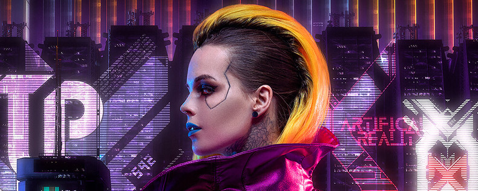
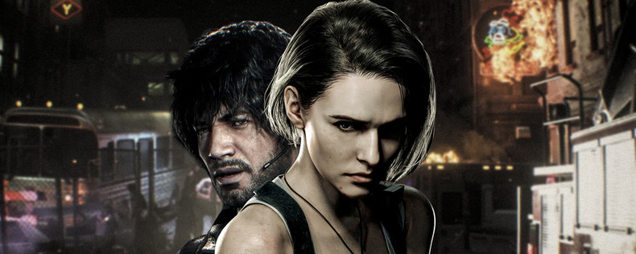
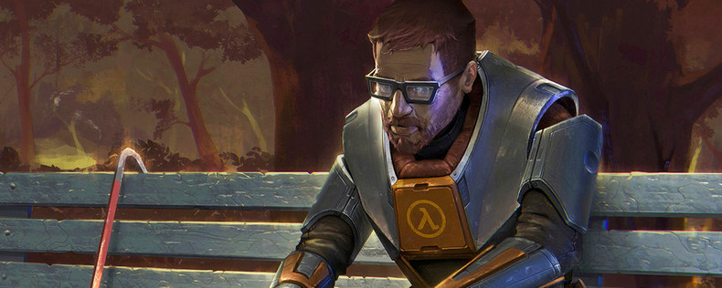
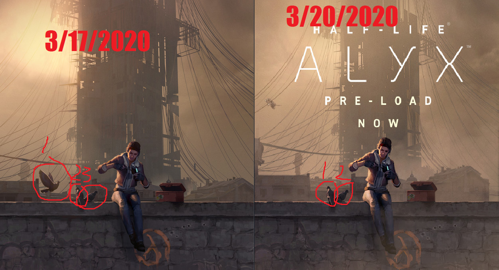
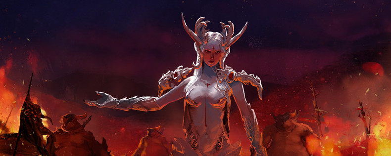

Новости
Лучшие игры 2020 года
Что демо-версия Resident Evil 3: Nemesis рассказывает о качестве ремейка
Почему выход ремейка первой Half-Life важнее, чем вы думали
Что такое Astellia Online? Боевые саммоны и немного классики жанра в корейской MMORPG